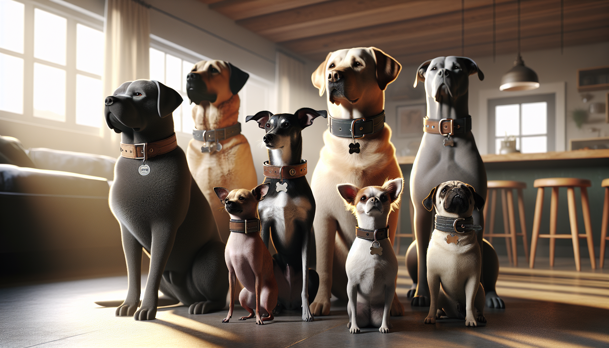

Choosing a dog collar sounds simple at first—until you realize how many options are out there. Nylon, leather, martingale, buckle, rolled, padded, personalized, reflective... the list goes on. And while style definitely matters, the best collar for your dog should do more than look adorable. It should fit comfortably, support your dog’s breed-specific needs, and keep them safe during everyday adventures.
Whether you’re bringing home a new puppy, upgrading your current dog’s gear, or shopping for a thoughtful gift for a dog lover, finding the right collar is an important decision. Different breeds have different neck shapes, coat types, activity levels, and walking habits. A collar that works beautifully for a sturdy Labrador may not be the best match for a tiny Yorkie or a sleek Greyhound.
In this guide, we’ll walk through exactly how to choose the right dog collar for your breed, including fit, materials, safety features, and the styles that work best for different types of dogs.
The first step in choosing the right dog collar is understanding your dog’s physical build. Breed matters because dogs are not one-size-fits-all. Some breeds have thick necks, some have delicate throats, and some are famous escape artists.
Here are a few examples of breed-specific collar needs:
When in doubt, think about your dog’s body structure first and fashion second. The cutest collar is only the right collar if it suits your dog’s shape and daily needs.
No matter what breed you have, collar fit is everything. A collar that is too tight can cause discomfort, skin irritation, or even breathing problems. A collar that is too loose can slip off at the worst possible moment.
The general rule is the two-finger test: you should be able to fit two fingers comfortably between the collar and your dog’s neck. This gives enough room for comfort without making the collar insecure.
Keep these fit tips in mind:
Some owners make the mistake of choosing a collar based only on breed averages. But even within the same breed, dogs can vary a lot in size and coat thickness. Measuring your individual dog is always the smartest move.
Dog collars come in a range of materials, and each has its own pros and cons. The right one depends on your dog’s activity level, skin sensitivity, and how often they get muddy, wet, or adventurous.
If your dog spends lots of time outdoors, durability and easy cleaning may matter most. If your dog has sensitive skin, softer materials and smooth finishes can make a big difference. For style-conscious pet parents, leather and personalized collars often offer that polished, gift-worthy look while still being practical.
Not all collars are designed for the same purpose. Some are best for identification, some for training support, and some for dogs with special walking habits. Choosing the right style can improve both comfort and control.
It’s also worth noting that some dogs may do better walking on a harness rather than attaching the leash to a collar, especially if they pull heavily or have respiratory concerns. In those cases, a collar can still be used for identification while a harness handles leash pressure.
Every dog deserves a collar that feels good to wear. Certain breeds are more prone to skin irritation, coat damage, or pressure sensitivity, so comfort features matter more than many owners realize.
For example:
A good collar should be easy for your dog to forget they’re wearing. If your dog constantly scratches at it, seems reluctant to wear it, or develops marks around the neck, that’s a sign to reassess the fit, width, or material.
When choosing a dog collar, practical details matter just as much as appearance. A beautiful collar that’s hard to clean, difficult to fasten, or missing basic safety features may not hold up in real life.
Look for these useful features:
If your dog is highly active, always check the collar regularly for wear and tear. Frayed fabric, loose stitching, rusted hardware, or cracked buckles are signs it’s time for a replacement.
Once you’ve covered fit, safety, and function, then comes the fun part: style. Your dog’s collar is one of the easiest ways to show off their personality. From bold colors and playful prints to timeless leather and elegant personalized designs, there’s a collar for every kind of pup.
Gift shoppers especially love collars that feel personal and thoughtful. A customized collar can be both practical and meaningful, making it a wonderful present for new dog parents, birthdays, gotcha days, or holidays.
When choosing a stylish collar, keep your dog’s coloring, coat type, and everyday routine in mind. A pale cream dog might look amazing in rich jewel tones, while a black-coated dog can pop in bright patterns or metallic details. The key is choosing something that feels special without sacrificing comfort.
Choosing the right dog collar for your breed is really about finding the balance between comfort, safety, durability, and personality. Start with your dog’s size, neck shape, coat type, and behavior. Then consider fit, material, collar style, and the little details that make daily life easier.
There’s no single perfect collar for every dog—but there is a perfect collar for your dog. When you choose with your pup’s breed and lifestyle in mind, you’ll end up with something that not only looks great but helps them feel secure and comfortable every day.
If you’re looking for a collar or pet accessory that feels extra special, personalized pieces are a wonderful way to combine function with charm.
Shop personalized pet products at SnoutAndAbout on Etsy.